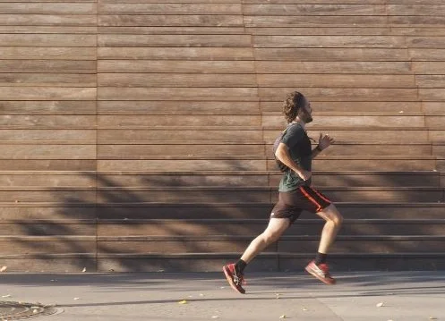
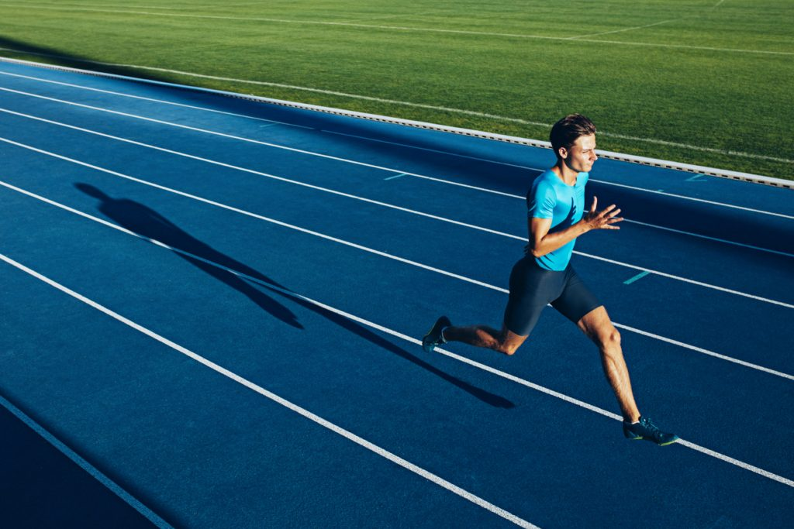
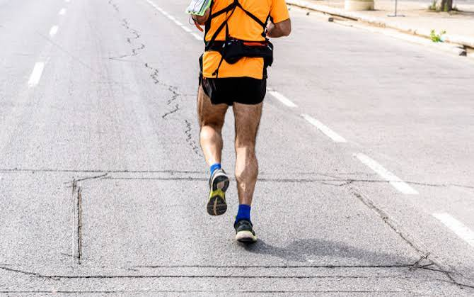

Meu portfólio sobre corrida
Tipos de treino

Rodagem
Corrida leve e constante, em um ritmo que permite conversar. É a base do treino e ocupa a maior parte da semana.
Ver dicas
Tiros
Repetições rápidas, como 400 m forte com pausa para recuperar. Treinam a velocidade e deixam o ritmo de prova mais confortável.
Ver dicas
Longão
O treino mais longo da semana, em ritmo tranquilo. Prepara o corpo para distâncias maiores, como 10 km e meia maratona.
Ver dicasFartlek
Palavra sueca para "jogo de velocidade". Você alterna trechos rápidos e lentos, por tempo ou por referências no caminho.
Ver dicasNenhum treino encontrado. Tente rodagem, tiros, longão ou fartlek.
Por que eu corro
A corrida é um esporte simples: basta um par de tênis e um caminho. Dá para treinar na rua, no parque ou na pista, sozinho ou em grupo, e cada treino mostra o que mudou no ritmo e no fôlego.
Neste site eu reúno os principais tipos de treino, dicas para quem está começando e uma calculadora de pace para acompanhar a evolução.
Foi feito como projeto final de programação web, usando HTML, CSS e JavaScript, com o Bootstrap como base.
Dicas para começar
Calculadora de pace
Escolha a distância e digite o tempo da corrida. A calculadora mostra o pace (minutos por km) e quanto tempo você levaria em outras distâncias mantendo esse ritmo.
Pace por km
–:––
Velocidade média: – km/h
| Distância | Tempo |
|---|